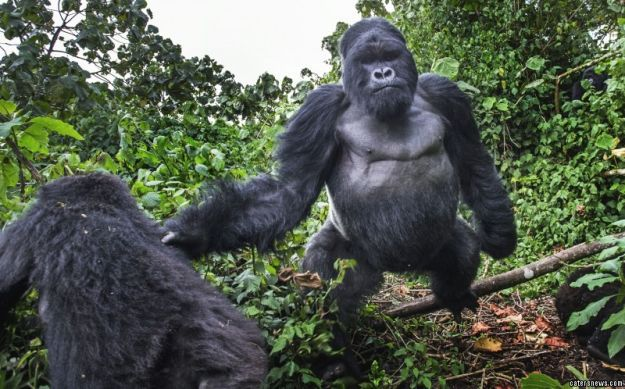
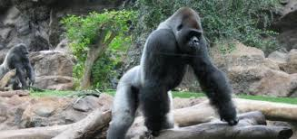

Durata de viata:Pana la 50 de ani
Unde traieste (mediu de viata): Jungla, paduri tropicale
Dieta: Erbivore
Clasa: Mamifere
Nume stiintific: Troglodytes Gorilla
Ce mananca (mancarea principala): Frunze, fructe, iarba
Predatori: Leoparzii, crocodilii, oamenii
Anii de violente prin care a trecut Republica Democrata Congo si-au lasat amprenta si asupra unor specii rare ale faunei, asa cum este gorila din campiile estice sau gorila lui Grauer (Gorilla beringei graueri), specie de primate aflate in prezent in pericol critic de disparitie, conform worldwildlife.org.
Razboiul civil din Republica Democrata Congo a afectat atat populatia de gorile din campiile estice, cat si pe cea de gorile de munte. Anii de instabilitate politica si de violente au dus la neglijarea starii in care se afla reteaua congoleza de parcuri nationale, sanctuarele acestor animale si a numeroase alte specii de fauna si flora. In Parcul National Kahuzi-Biega, spre exemplu, au fost vanate gorile si au fost deschise exploatari miniere ilegale. In plus, activitatea militara in zonele in care traiesc aceste primate superioare a ingreunat eforturile organizatiilor pentru conservarea mediului de a salva gorilele.
Gorilele traiesc in zonele impadurite din estul RD Congo. In ultimii 50 de ani habitatul lor s-a micsorat de la aproximativ 21.000 kmp pana la aproximativ 12.000 kmp. Aceasta subspecie, gorila din campiile estice, ocupa in prezent, conform estimarilor, doar 13% din aria pe care o ocupa odinioara. La mijlocul anilor '90 numarul lor era estimat la aproximativ 16.900 de indivizi. In prezent, numarul lor este cu cel putin 50% mai mic, conform cercetatorilor. Violentele din regiune au facut imposibila recenzarea animalelor ramase.
Pe masura ce oamenii au patruns in regiunile din est, in teritoriul gorilelor, au distrus o mare parte din habitatul acestor animale ce a fost transformat in teren agricol. Doar o mica parte din habitatul originar al gorilelor este protejat in sanctuare naturale, asa cum este Parcul National Kahuzi-Biega. Dar chiar si in astfel de parcuri naturale continua braconajul. Pe piata neagra sunt vandute parti din aceste animale pentru presupuse virtuti curative iar puii de gorila sunt vanduti pe post de animale de companie.
Autoritatea congoleza pentru animale salbatice (ICCN) a primit in ultimii ani ajutor din partea unor organizatii pentru conservarea mediului si a vietii salbatice, asa cum este WWF, pentru a proteja si monitoriza gorilele din Parcul National Kahuzi-Biega, adunand date cu privire la biologia acestor animale, locurile pe care le frecventeaza etc. Autoritatile congoleze, alaturi de WWF, planuiesc sa deschida o noua arie protejata pentru gorile in Padurea Itombwe, la sud de Kahuzi-Biega.
In prezent mai exista doar 5.000 de exemplare de gorila estica (Gorilla beringei), o specie maiestuoasa, care se afla acum "la un pas de disparitie", au anuntat reprezentantii Uniunii Internationale pentru Conservarea Naturii (UICN), aflati la congresul international din Honolulu.
Razboiul, vanatoarea ilegala si pierderea unei parti a habitatului au dus "la un declin catastrofal al populatiei sale, redusa cu peste 70% in ultimii 20 de ani", subliniaza organizatia internationala intr-un comunicat.
Curiozitati: